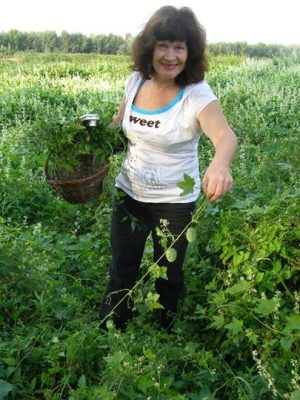
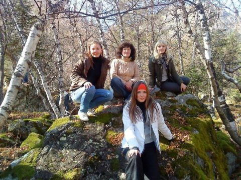

Персоналии
ЧЕРКАШИНА ИРИНА ФЕДОРОВНА
кандидат географических наук, доцент кафедры общей географии, краеведения и туризма
Южного федерального университета
Научная карьера сложилась благодаря встрече с умными, добрыми и неординарными людьми.
В школе на меня обратила внимание учитель биологии Чобонян Роза Гайковна, хотя учила нас она только до восьмого класса, стала другом и наставником на всю жизнь. Именно она убедила меня поступать в университет на биофак, и оставалась рядом на виражах моей судьбы до конца своих дней.
На третьем курсе, почувствовав силы и интерес, погрузилась в организацию самодеятельности на биофаке, встретила Геннадия Петровича Долженко, который научил меня не бояться ничего и никого и смело делать то, чего хочется, то есть творческому отношению к жизни, к профессии. В ответственный период, когда нужно было выбрать между наукой и самодеятельностью, решительно направил меня в мир науки. И в последствие неоднократно оказывался рядом в решающий момент жизни, помогая не только советом, но и делом. Благодаря его вниманию, я оказалась на кафедре, которой руководил Геннадий Петрович.

Большое значение в формировании моего научного мировоззрения имело самодеятельное творчество. Пока позволял возраст и свободная от семейных забот жизнь, я играла в факультетском, а затем университетском театре (народный театр «Характеры» под руководством заслуженного артиста РСФСР Леонида Соловьева, артиста и режиссера Ростовского ТЮЗа). Читала со сцены произведения Паустовского, Льва Толстого, Достоевского, Блока и многих других, научилась чувствовать слово благодаря своему художественному руководителю, артисту Ростовской филармонии Николаю Мальцеву, а на пятом курсе училась пению у самого знаменитого в то время хормейстера в Ростове – Натальи Мищенко.
Научным мышлением и интересом к биогеографии, я обязана своим преподавателям кафедры ботаники заведующему кафедрой Зозулину Георгию Матвеевичу, беседовавшему со мной по долгу на самые различные темы биогеографии и флористики Благодарна Волковой Алле Максимовне, которая разглядела во мне ботаника. На втором курсе, во время учебной практики в Никеле она убедила меня, специализироваться на кафедре, несмотря на то, что я уже три года практиковалась на кафедре биохимии и не мыслила свое будущее в другой области.
Огородников Аркадий Яковлевич, которого я с теплотой вспоминаю, сажая сегодня дендропарки, веселой, несколько лукавой улыбкой подбадривал на сумасшедшие поступки. Так, вместо Никитского ботанического сада в Ялте, куда я должна была ехать на производственную практику, меня унесло в зоологическую экспедицию в Калмыкию, а Аркадий Яковлевич только хитро улыбнулся в ответ и передал руководство мною Степнину Георгию Степановичу, который скрупулезно проверял гербарии, привезенные из Калмыкии, и учил педантичности в исследовании растительности степей.
Знакомство со знаменитым геохимиком Александром Ильичем Перельманом, тоже отношу к судьбоносным. Маленькая, несерьезная с виду, смешливая девчонка, хотя уже и дипломированный специалист, получает напутствие от ученого после первого в своей жизни выступления на Всесоюзном совещании по геохимии ландшафта, – это случай, после которого вырастают крылья. Он мне сказал тогда «Вы, Ира, не понимаете пока, насколько в более выгодном положении находитесь, чем мы, геологи. Вы знаете ботанику, а значит, у Вас спектр возможностей в выборе интересной исследовательской проблемы шире, чем у геолога. Я Вам обещаю блестящее будущее в геохимии ландшафта».
Увы, жизнь оказалась коварна, в геохимии ландшафта карьеру сделать не удалось. В лихие 90-е было не до науки, и защиту диссертации, которая была практически готова в 1991 г., пришлось отложить до 1999 г.
А за это время пришел новый бесценный опыт. После долгих запретов на реализацию своих способностей и энергии в соответствующем денежном эквиваленте, я бросилась зарабатывать везде, где только можно было. А с моими знаниями ботаники, химии, геохимии, это было просто. В маленьком провинциальном городке, каким является Новороссийск, росли как грибы гимназии и лицеи, а для них принципиальной была связь с вузами. Поэтому я работала практически во всех, гимназиях и лицеях Новороссийска, конечно, по совместительству, создавая в них научные общества и связи с РГУ и КубГТУ.

Через два года мы с ребятами и их учителями биологии и химии создали научно-исследовательский институт Экологии. Вместо традиционного соперничества, мы разделились на тематические лаборатории и когда собрались все вместе на научно-практической конференции, то увидели весь спектр проблем, которые характерны для Новороссийска. В Президиуме сидели представители Администрации города, Думы, Начальник экологического отдела Новороссийского порта. Ох, и разозлила я тогда местных чиновников от образования, не соблюла чиновничью иерархию, не спросила разрешения у чиновников, имею ли я право организовывать на их территории научно-практическую конференцию? Зато, не менее пяти лет в Ростовский университет на геофак, биофак и химфак поступали выпускники из Новороссийска.
Это были мои самые творческие и самые счастливые годы свободного плавания. В эти годы я научилась независимости.
А на кафедре общей географии, краеведения и туризма я оказалась не случайно. Все дело в том, что деятельность научных обществ, которыми я руководила, основывалась на полевых исследованиях природных ландшафтов. Всю весну, лето и осень мы с ребятами ходили в маршруты, наблюдали за птицами, насекомыми, учились фотографировать объекты и явления природы. Это было возможно благодаря тому, что в Новороссийске жили и работали такие замечательные специалисты как фотограф Виктор Николаевич Соколов, геолог, бывший начальник Карагандинской геолого-разведочной экспедиции Казмин Валериан Николаевич, сотрудник МЧС Кучин Сергей.
Но не хватало знаний по топографии, а специалистов в Новороссийске найти не могли. Вот я и обратилась к своему старому знакомому Долженко Геннадию Петровичу, чтобы он помог нам найти специалиста, или хотя бы прислал на производственную практику старшекурсника, умеющего проводить глазомерную съемку. Специалиста не нашли, а вот Геннадий Петрович заинтересовался моей деятельностью и тем, как я зарабатываю себе на жизнь, пригласил на кафедру, и через два года я восстановила свою диссертацию и защитила её под его руководством по специальности «Физическая география, геохимия и геофизика ландшафта».
На этом моя вольная жизнь закончилась, и наступил новый очень интересный период становления педагога высшей школы.
Дискуссия о том, что такое экологический туризм возникла у нас с Геннадием Петровичем еще в Новороссийский период, когда я водила на экологические экскурсии не только школьников, но и отдыхающих, которые с удовольствием, к моему удивлению, слушали мои рассказы не только о цветах и геологической истории Маркотхского хребта, но и об экологических проблемах того места, где они отдыхали.
Позднее были и Международные экологические лагеря, и Передвижные выставки, посвященные экологическим проблемам Черного моря. Поэтому сегодня у меня есть четкое представление, каким должен быть экологический туризм в России, но официальная точка зрения далека от реальности. Это и заставляет переходить от общих фраз перспективности экологического туризма в России к детальному исследованию процессов, сопровождающих это словосочетание.
Очень надеюсь, что форум, свободный от официальных условностей, поможет найти верное направление не только в исследовательской деятельности, но и практической реализации найденных решений.